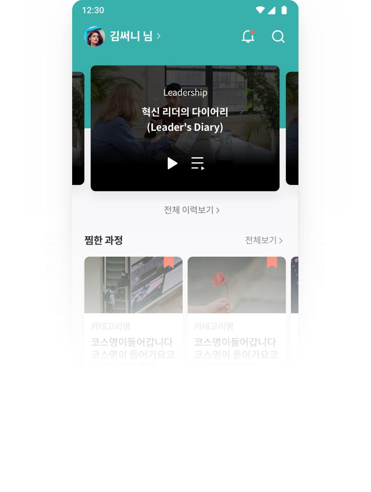
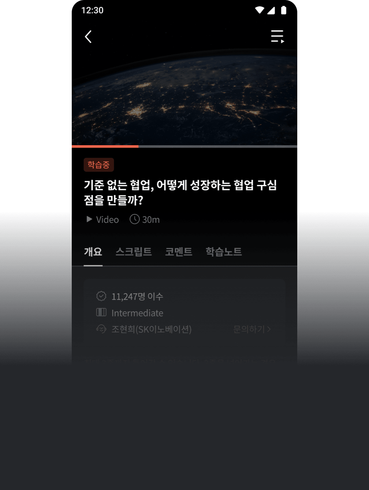
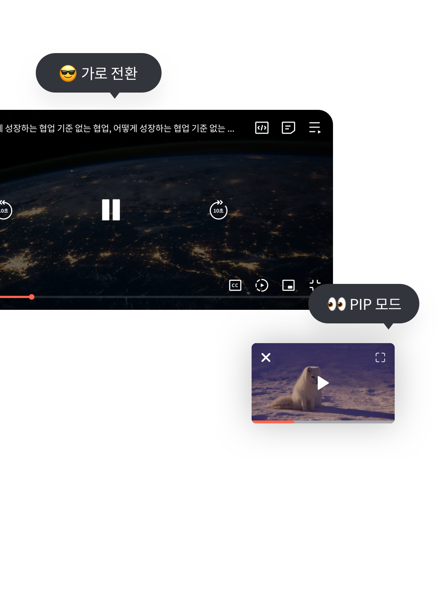

새로운 mySUNI 모바일에
오신 것을 환영합니다.
mySUNI의 새로운 변화를 확인하고
즐거운 학습 여정을 시작해보세요!

mySUNI 홈이
‘나의 학습 공간’으로 바뀌었어요.
학습 중인 과정부터 내가 남긴 노트, 코멘트까지
모두 ‘마이홈’에서 확인하세요.

언제 어디서나 학습 가능한
모바일 전용 플레이어
가로 전환부터 PIP 모드까지,
개선된 모바일 전용 플레이어를 확인해보세요.
 
mySUNI 모바일에도
커뮤니티 메뉴가 추가되었어요.
나의 커뮤니티, 팔로잉 학습자의
최신 피드를 언제 어디서나 받아 볼 수 있어요.
맞춤형 학습 설정
시작하기
몇 가지 질문을 통해 김써니님에게 맞는
학습 과정을 추천해드릴게요!